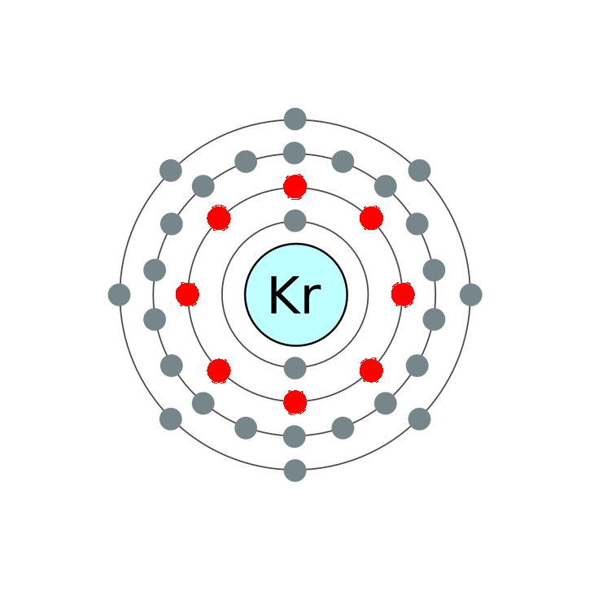

Krypton is mixed with argon in energy efficient fluorescent lamps, reducing the power consumption, but also reducing the light output and raising the cost. Krypton costs about 100 times as much as argon. Krypton (along with xenon) is also used to fill incandescent lamps to reduce filament evaporation and allow higher operating temperatures. A brighter light results with more blue color than conventional incandescent lamps.
The next most inner shell of krypton contains eight electrons.